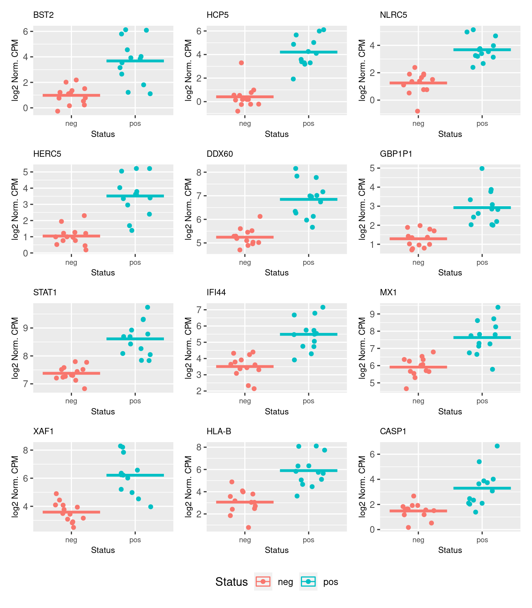

Limma-voom paired analysis of EXCLUDING US-ab samples
Last updated: 2021-09-25
Checks: 7 0
Knit directory: amnio-cell-free-RNA/
This reproducible R Markdown analysis was created with workflowr (version 1.6.2). The Checks tab describes the reproducibility checks that were applied when the results were created. The Past versions tab lists the development history.
Great! Since the R Markdown file has been committed to the Git repository, you know the exact version of the code that produced these results.
Great job! The global environment was empty. Objects defined in the global environment can affect the analysis in your R Markdown file in unknown ways. For reproduciblity it’s best to always run the code in an empty environment.
The command set.seed(20200224) was run prior to running the code in the R Markdown file. Setting a seed ensures that any results that rely on randomness, e.g. subsampling or permutations, are reproducible.
Great job! Recording the operating system, R version, and package versions is critical for reproducibility.
Nice! There were no cached chunks for this analysis, so you can be confident that you successfully produced the results during this run.
Great job! Using relative paths to the files within your workflowr project makes it easier to run your code on other machines.
Great! You are using Git for version control. Tracking code development and connecting the code version to the results is critical for reproducibility.
The results in this page were generated with repository version e20c62d. See the Past versions tab to see a history of the changes made to the R Markdown and HTML files.
Note that you need to be careful to ensure that all relevant files for the analysis have been committed to Git prior to generating the results (you can use wflow_publish or wflow_git_commit). workflowr only checks the R Markdown file, but you know if there are other scripts or data files that it depends on. Below is the status of the Git repository when the results were generated:
Ignored files:
Ignored: .Rhistory
Ignored: .Rproj.user/
Ignored: .bpipe/
Ignored: analysis/obsolete_analysis/
Ignored: analysis/salmon-ruvseq-edger.nb.html
Ignored: code/.bpipe/
Ignored: code/.rnaseq-test.groovy.swp
Ignored: code/obsolete_analysis/
Ignored: data/.bpipe/
Ignored: data/190717_A00692_0021_AHLLHFDSXX/
Ignored: data/190729_A00692_0022_AHLLHFDSXX/
Ignored: data/190802_A00692_0023_AHLLHFDSXX/
Ignored: data/200612_A00692_0107_AHN3YCDMXX.tar
Ignored: data/200612_A00692_0107_AHN3YCDMXX/
Ignored: data/200626_A00692_0111_AHNJH7DMXX.tar
Ignored: data/200626_A00692_0111_AHNJH7DMXX/
Ignored: data/CMV-AF-database-corrected-oct-2020.csv
Ignored: data/CMV-AF-database-final-included-samples.csv
Ignored: data/GONE4.10.13.txt
Ignored: data/HK_exons.csv
Ignored: data/HK_exons.txt
Ignored: data/HK_genes.txt
Ignored: data/IPA molecule summary.xls
Ignored: data/IPA-molecule-summary.csv
Ignored: data/brain-development-geneset.txt
Ignored: data/deduped_rRNA_coverage.txt
Ignored: data/gene-transcriptome-analysis/
Ignored: data/hg38_rRNA.bed
Ignored: data/hg38_rRNA.saf
Ignored: data/ignore-overlap-mapping/
Ignored: data/ignore/
Ignored: data/joindata.csv
Ignored: data/metadata.csv
Ignored: data/rds/
Ignored: data/salmon-pilot-analysis/
Ignored: data/samples.csv
Ignored: data/star-genome-analysis/
Ignored: output/c2Ens.RData
Ignored: output/c5Ens.RData
Ignored: output/hEns.RData
Ignored: output/keggEns.RData
Untracked files:
Untracked: analysis/STAR-DEXSeq-exclude-US-ab.Rmd
Untracked: code/output.R
Untracked: code/rnaseq.salmon-quant.groovy
Untracked: code/rnaseq.star.count-exons.groovy
Untracked: code/rnaseq.star.groovy
Untracked: output/salmon-limma-voom-GO-exclude-CMV11.csv
Untracked: output/salmon-limma-voom-c2Cam-exclude-CMV11.csv
Untracked: output/salmon-limma-voom-c5Cam-exclude-CMV11.csv
Untracked: output/salmon-limma-voom-c5Cam.csv
Untracked: output/salmon-limma-voom-exclude-CMV11.csv
Untracked: output/salmon-limma-voom-hCam-exclude-CMV11.csv
Untracked: output/salmon-limma-voom-keggCam-exclude-CMV11.csv
Untracked: output/salmon-limma-voom.csv
Untracked: output/salmon-ruvseq-edger.csv
Untracked: output/star-fc-ruv-all-gsea-c2.csv
Untracked: output/star-fc-ruv-all-gsea-c5.csv
Untracked: output/star-fc-ruv-all.csv
Untracked: output/star-fc-ruv-no_us_ab-gsea-c2.csv
Untracked: output/star-fc-ruv-no_us_ab-gsea-c5.csv
Untracked: output/star-fc-ruv-no_us_ab.csv
Untracked: renv.lock
Unstaged changes:
Modified: .gitignore
Deleted: analysis/STAR-DEXSeq-Summed.Rmd
Deleted: analysis/salmon-BANDITS.Rmd
Deleted: analysis/salmon-DRIMseq.Rmd
Deleted: analysis/salmon-RUV-all.Rmd
Deleted: analysis/salmon-SatuRn.Rmd
Deleted: code/rnaseq-with-salmon-quant.groovy
Deleted: code/rnaseq.groovy
Deleted: code/salmon-quant-trimmed.groovy
Deleted: code/unmapped-pipe.groovy
Note that any generated files, e.g. HTML, png, CSS, etc., are not included in this status report because it is ok for generated content to have uncommitted changes.
These are the previous versions of the repository in which changes were made to the R Markdown (analysis/STAR-FC-RUV-exclude-US-ab.Rmd) and HTML (docs/STAR-FC-RUV-exclude-US-ab.html) files. If you’ve configured a remote Git repository (see ?wflow_git_remote), click on the hyperlinks in the table below to view the files as they were in that past version.
| File | Version | Author | Date | Message |
|---|---|---|---|---|
| Rmd | e20c62d | Jovana Maksimovic | 2021-09-25 | wflow_publish(c(“analysis/index.Rmd”, “analysis/salmon-limma-voom.Rmd”, |
| Rmd | 2b6479a | Jovana Maksimovic | 2021-07-26 | Move/remove olds files. |
| html | 4af30fb | Jovana Maksimovic | 2020-12-21 | Build site. |
| Rmd | 3ba9d96 | Jovana Maksimovic | 2020-12-21 | wflow_publish(c(“analysis/index.Rmd”, “analysis/STAR-FC-RUV-exclude-US-ab.Rmd”)) |
The data showed some adapter contamination and sequence duplication issues. Adapters were removed using Trimmomatic and both paired and unpaired reads were retained. Only paired reads were initially mapped with Star in conjunction with GRCh38 and gencode_v34 to detect all junctions, across all samples. Paired and unpaired reads were then mapped to GRCh38 separately using Star. Duplicates were removed from paired and unpaired mapped data using Picard MarkDuplicates. Reads were then counted across features from gencode_v34 using featureCounts.
Data import
Set up DGElist object for downstream analysis. Sum paired and unpaired counts prior to downstream analysis.
An object of class "DGEList"
$counts
CMV30 CMV31 CMV8 CMV9 CMV26 CMV27 CMV14 CMV15 CMV20 CMV21 CMV1 CMV2 CMV3 CMV4
1 0 0 0 0 2 2 0 1 0 1 1 0 1 0
2 58 95 58 59 113 101 60 48 79 71 54 63 39 46
3 1 0 0 0 0 0 0 0 0 0 0 0 0 0
4 0 0 0 0 0 0 0 0 0 0 1 0 1 0
5 0 0 0 0 0 0 0 0 0 0 0 0 0 0
CMV10 CMV11 CMV18 CMV19 CMV35 Corriel NTC-2 CMV51 CMV52 CMV53 CMV54 CMV56
1 0 0 0 0 1 1 0 0 0 0 0 0
2 62 35 51 45 59 84 0 63 28 49 46 37
3 0 0 0 0 0 1 0 0 0 0 0 0
4 0 0 0 0 0 0 0 0 0 0 0 0
5 0 0 0 0 0 0 0 0 0 0 0 0
CMV57 CMV58 CMV60 CMV61
1 0 2 1 2
2 59 82 44 36
3 0 0 0 0
4 0 0 1 0
5 0 0 0 0
60664 more rows ...
$samples
group lib.size norm.factors
CMV30 1 4673630 1
CMV31 1 5232010 1
CMV8 1 3594801 1
CMV9 1 3425478 1
CMV26 1 4892776 1
25 more rows ...
$genes
Geneid Length
1 ENSG00000223972.5 1735
2 ENSG00000227232.5 1351
3 ENSG00000278267.1 68
4 ENSG00000243485.5 1021
5 ENSG00000284332.1 138
60664 more rows ...Load sample information and file names.
# A tibble: 26 x 7
id CMV_status pair sex GA_at_amnio indication batch
<chr> <chr> <chr> <chr> <chr> <chr> <fct>
1 CMV30 pos L1 F 21 no_us_ab 1
2 CMV31 neg L1 F 21 no_us_ab 1
3 CMV8 neg L2 F 23 no_us_ab 1
4 CMV9 pos L2 F 23 no_us_ab 1
5 CMV26 pos L3 F 22 no_us_ab 1
6 CMV14 neg L4 F 21 no_us_ab 1
7 CMV15 pos L4 F 22 no_us_ab 1
8 CMV20 pos L5 M 21 no_us_ab 1
9 CMV21 neg NC1 F 21 no_us_ab 1
10 CMV1 pos M1 F 21 no_us_ab 1
# … with 16 more rowsQuality control
Genes that do not have an adequate number of reads in any sample should be filtered out prior to downstream analyses. From a biological perspective, genes that are not expressed at a biologically meaningful level in any condition are not of interest. Statistically, we get a better estimate of the mean-variance relationship in the data and reduce the number of statistical tests that are performed during differential expression analyses.
Filter out lowly expressed genes and genes without Entrez IDs and calculate TMM normalization factors.
An object of class "DGEList"
$counts
CMV30 CMV31 CMV8 CMV9 CMV26 CMV14 CMV15 CMV20 CMV21 CMV1 CMV2 CMV3 CMV4
32 20 36 28 42 28 25 19 26 18 32 25 55 31
52 88 73 55 43 55 75 53 64 55 61 68 36 62
55 6 15 17 15 15 9 14 13 12 7 10 16 12
63 148 172 148 126 175 179 176 141 179 155 194 121 123
64 14 15 14 11 20 14 9 13 14 13 13 19 10
CMV10 CMV11 CMV19 CMV35 CMV51 CMV52 CMV53 CMV54 CMV56 CMV57 CMV58 CMV60
32 15 11 22 24 25 19 23 20 18 23 24 8
52 69 11 35 47 59 49 42 37 38 49 65 49
55 7 2 11 9 19 9 6 12 7 7 7 5
63 156 44 107 164 144 71 71 137 136 122 131 88
64 9 3 6 9 14 3 9 12 5 7 12 5
CMV61
32 20
52 49
55 6
63 108
64 3
12727 more rows ...
$samples
group lib.size norm.factors
CMV30 1 4673630 1.017563
CMV31 1 5232010 1.052277
CMV8 1 3594801 1.052059
CMV9 1 3425478 1.026378
CMV26 1 4892776 1.068518
21 more rows ...
$genes
Geneid Length Ensembl symbol entrezid
32 ENSG00000230021.10 5495 ENSG00000230021 RP5-857K21.4 101928626
52 ENSG00000228794.10 15682 ENSG00000228794 LINC01128 643837
55 ENSG00000230368.2 1971 ENSG00000230368 FAM41C 284593
63 ENSG00000188976.11 5540 ENSG00000188976 NOC2L 26155
64 ENSG00000187961.14 3402 ENSG00000187961 KLHL17 339451
12727 more rows ...
$group
[1] "pos" "neg" "neg" "pos" "pos"
21 more elements ...Plotting the distribution log-CPM values shows that a majority of genes within each sample are either not expressed or lowly-expressed with log-CPM values that are small or negative.

| Version | Author | Date |
|---|---|---|
| 4af30fb | Jovana Maksimovic | 2020-12-21 |
Although in excess of 30 million reads were obtained per sample, we can see that after mapping, duplicate removal and quantification of gene expression the median library size is just under than 4 million reads. This suggests that we are likely to only be capturing the most abundant cfRNAs.
It is assumed that all samples should have a similar range and distribution of expression values. The raw data looks fairly uniform between samples, although TMM normalization further improves this.

| Version | Author | Date |
|---|---|---|
| 4af30fb | Jovana Maksimovic | 2020-12-21 |
Multi-dimensional scaling (MDS) plots show the largest sources of variation in the data. They are a good way of exploring the relationships between the samples and identifying structure in the data. The following series of MDS plots examines the first four principal components. The samples are coloured by various known features of the samples such as CMV Status and foetal sex. The MDS plots do not show the samples strongly clustering by any of the known features of the data, although there does seem to be some separation between the CMV positive and negative samples in the 1st and 2nd principal components. This indicates that there are possibly some differentially expressed genes between CMV positive and negative samples.
A weak batch effect is also evident in the 3rd principal component, when we examine the plots coloured by batch.

| Version | Author | Date |
|---|---|---|
| 4af30fb | Jovana Maksimovic | 2020-12-21 |
RUVSeq analysis
Given that there is a lot ov variability between the samples and it is not clearly associated with any of the known features of the data, we will use and RUVSeq analysis to remove some of the unwanted variation from the data. We will estimate the unwanted variation using the expression of known house-keeping genes (HKG), as defined using the Human BodyMap 2.0 data, in our dataset.
The heatmap below shows the expression of the HKG in our samples. Although the expression is fairly uniform, some variability is apparent between the samples.
hkGenes <- read.delim(here("data/HK_genes.txt"), stringsAsFactors = FALSE,
header = FALSE, col.names = c("SYMBOL","REFSEQ"),
strip.white = TRUE)
aheatmap(cpm(y[y$genes$symbol %in% hkGenes$SYMBOL,], log = TRUE),
main = "log2 CPM Expression of HKG", labRow = NA,
annCol = list(GA_at_amnio = targets$GA_at_amnio,
CMV_result = targets$CMV_status,
Pair = targets$pair,
Sex = targets$sex),
annColors = list(scales::brewer_pal(palette = "Dark2")(length(unique(targets$GA_at_amnio))),
scales::hue_pal()(length(unique(targets$CMV_status))),
scales::hue_pal()(length(unique(targets$pair))),
scales::brewer_pal(palette = "Set1")(length(unique(targets$sex)))),
scale = "none")
| Version | Author | Date |
|---|---|---|
| 4af30fb | Jovana Maksimovic | 2020-12-21 |
The scree plot shows that most of the variation in the negative control genes is captured by the first principal component.
PCs <- prcomp(t(y$counts[which(y$genes$symbol %in% hkGenes$SYMBOL),]),
center = TRUE, scale = TRUE, retx=TRUE)
loadings = PCs$x # pc loadings
plot(PCs, type="lines") # scree plot
| Version | Author | Date |
|---|---|---|
| 4af30fb | Jovana Maksimovic | 2020-12-21 |
Using the RUVg function, we will estimate the unwanted variation in our data using the HKG for k = 1, 2 and 3.
yRg1 <- RUVg(y$counts, which(y$genes$symbol %in% hkGenes$SYMBOL), k=1)
yRg2 <- RUVg(y$counts, which(y$genes$symbol %in% hkGenes$SYMBOL), k=2)
yRg3 <- RUVg(y$counts, which(y$genes$symbol %in% hkGenes$SYMBOL), k=3)The RLE plots below show that RUVg adjustment is a significant improvement over the raw data with k=1. The improvements with k=2 and k=3 are relatively minor in comparison.
par(mfrow=c(2,2))
plotRLE(y$counts, ylim=c(-0.5,0.5), las=2, main="Raw",
cex.axis = 0.6)
plotRLE(yRg1$normalizedCounts, ylim=c(-0.5,0.5), las=2, main="RUVg k=1",
cex.axis = 0.6)
plotRLE(yRg2$normalizedCounts, ylim=c(-0.5,0.5), las=2, main="RUVg k=2",
cex.axis = 0.6)
plotRLE(yRg3$normalizedCounts, ylim=c(-0.5,0.5), las=2, main="RUVg k=3",
cex.axis = 0.6)
| Version | Author | Date |
|---|---|---|
| 4af30fb | Jovana Maksimovic | 2020-12-21 |
The MDS plots of the RUVg normalised counts show clearer separation between the CMV positive and CMV negative samples.
mds <- plotMDS(cpm(y$counts, log = TRUE), top = 1000, gene.selection="common",
plot = FALSE)
dat <- tibble::tibble(x = mds$x, y = mds$y,
sample = targets$id,
status = targets$CMV_status)
p <- ggplot(dat, aes(x = x, y = y, colour = status)) +
geom_text(aes(label = sample), size = 2.5) +
labs(x = "Principal component 1",
y = "Principal component 2",
colour = "CMV status") +
ggtitle("Raw")
mds <- plotMDS(cpm(yRg1$normalizedCounts, log = TRUE), top = 1000,
gene.selection="common", plot = FALSE)
dat1 <- tibble::tibble(x = mds$x, y = mds$y,
sample = targets$id,
status = targets$CMV_status)
p1 <- ggplot(dat1, aes(x = x, y = y, colour = status)) +
geom_text(aes(label = sample), size = 2.5) +
labs(x = "Principal component 1",
y = "Principal component 2",
colour = "CMV status") +
ggtitle("RUVg k=1")
mds <- plotMDS(cpm(yRg2$normalizedCounts, log = TRUE), top = 1000,
gene.selection="common", plot = FALSE)
dat2 <- tibble::tibble(x = mds$x, y = mds$y,
sample = targets$id,
status = targets$CMV_status)
p2 <- ggplot(dat2, aes(x = x, y = y, colour = status)) +
geom_text(aes(label = sample), size = 2.5) +
labs(x = "Principal component 1",
y = "Principal component 2",
colour = "CMV status") +
ggtitle("RUVg k=2")
mds <- plotMDS(cpm(yRg3$normalizedCounts, log = TRUE), top = 1000,
gene.selection="common", plot = FALSE)
dat3 <- tibble::tibble(x = mds$x, y = mds$y,
sample = targets$id,
status = targets$CMV_status)
p3 <- ggplot(dat3, aes(x = x, y = y, colour = status)) +
geom_text(aes(label = sample), size = 2.5) +
labs(x = "Principal component 1",
y = "Principal component 2",
colour = "CMV status") +
ggtitle("RUVg k=3")
((p | p1) / (p2 | p3)) +
plot_layout(guides = "collect") &
theme(legend.position = "bottom")
| Version | Author | Date |
|---|---|---|
| 4af30fb | Jovana Maksimovic | 2020-12-21 |
Differential expression analysis
We will look for differentially expressed genes, using the negative binomial GLM approach implemented in edgeR. This is done by considering a design matrix that includes both the covariates of interest (CMV result) and the factors of unwanted variation calculated by RUVg. The CMV positive samples were compared to the CMV negative (normal) samples. A summary of the numbers of differentially expressed genes is shown below, as well as the top 20 differentially expressed genes. The full results tables were exported as csv files.
norm <- yRg1
SA <- paste(targets$CMV_status, targets$indication, sep=".")
SA <- factor(SA)
design <- model.matrix(~0 + SA + targets$pair + norm$W)
colnames(design) <- gsub("SA", "", colnames(design), fixed=TRUE)
colnames(design) <- gsub("targets$", "", colnames(design), fixed=TRUE)
colnames(design) <- gsub("norm$", "", colnames(design), fixed=TRUE)
y <- estimateGLMCommonDisp(y, design)
y <- estimateGLMTagwiseDisp(y, design)
fit <- glmFit(y, design)
cont <- makeContrasts(PvsNinNoUsAb=pos.no_us_ab-neg.no_us_ab,
levels=design)
lrt <- glmLRT(fit, contrast = cont[,1])
fitSum <- summary(decideTests(lrt, p.value = 0.05))
fitSum -1*neg.no_us_ab 1*pos.no_us_ab
Down 6
NotSig 12669
Up 57There were 6 down-regulated and 57 up-regulated genes between CMV positive and CMV negative samples at FDR < 0.05.
These are the top 10 differentially expressed genes.
Warning: The `path` argument of `write_csv()` is deprecated as of readr 1.4.0.
Please use the `file` argument instead. Geneid Length Ensembl symbol entrezid logFC
51897 ENSG00000130303.13 1101 ENSG00000130303 BST2 684 2.999180
19329 ENSG00000206337.12 11058 ENSG00000206337 HCP5 10866 4.249069
45751 ENSG00000140853.15 12386 ENSG00000140853 NLRC5 84166 2.383186
14201 ENSG00000138646.9 4764 ENSG00000138646 HERC5 51191 2.574700
15204 ENSG00000137628.17 6746 ENSG00000137628 DDX60 55601 1.361080
2240 ENSG00000225492.6 2352 ENSG00000225492 GBP1P1 400759 1.623236
8687 ENSG00000115415.20 9770 ENSG00000115415 STAT1 6772 1.068691
2095 ENSG00000137965.11 2038 ENSG00000137965 IFI44 10561 1.559327
56048 ENSG00000157601.14 8616 ENSG00000157601 MX1 4599 1.396454
46903 ENSG00000132530.17 6615 ENSG00000132530 XAF1 54739 2.173485
logCPM LR PValue FDR
51897 3.743995 77.13126 1.599655e-18 2.036681e-14
19329 3.762132 64.01509 1.234697e-15 7.860081e-12
45751 3.080983 53.36323 2.772378e-13 1.176597e-09
14201 3.082940 52.64308 4.000173e-13 1.273255e-09
15204 6.360766 43.79753 3.641642e-11 9.273076e-08
2240 2.475198 42.69792 6.388002e-11 1.355534e-07
8687 8.158457 42.32467 7.731135e-11 1.406183e-07
2095 5.027355 40.01255 2.523369e-10 4.015941e-07
56048 7.263061 39.49613 3.287104e-10 4.650157e-07
46903 5.946511 38.03100 6.962962e-10 8.865244e-07The following plots show the expression of the top 12 ranked differentially expressed genes for CMV positive and CMV negative samples. Although there is significant variability within the groups and the log2 fold changes are not large, there are obvious differences in expression for the top ranked genes.

| Version | Author | Date |
|---|---|---|
| 4af30fb | Jovana Maksimovic | 2020-12-21 |
| Version | Author | Date |
|---|---|---|
| 4af30fb | Jovana Maksimovic | 2020-12-21 |
Gene set enrichment analysis (GSEA)
Testing for enrichment of Gene Ontology (GO) categories among statistically significant differentially expressed genes.
Term Ont N DE P.DE
GO:0071357 cellular response to type I interferon BP 70 19 4.386084e-29
GO:0060337 type I interferon signaling pathway BP 70 19 4.386084e-29
GO:0034340 response to type I interferon BP 74 19 1.460247e-28
GO:0045087 innate immune response BP 516 32 3.450131e-28
GO:0043207 response to external biotic stimulus BP 849 37 1.103255e-27
GO:0051707 response to other organism BP 849 37 1.103255e-27
GO:0009615 response to virus BP 231 25 1.139246e-27
GO:0051607 defense response to virus BP 178 23 3.247837e-27
GO:0009607 response to biotic stimulus BP 876 37 3.400202e-27
GO:0098542 defense response to other organism BP 628 33 7.781113e-27
GO:0006952 defense response BP 913 34 7.725421e-23
GO:0006955 immune response BP 1177 37 1.205522e-22
GO:0044419 interspecies interaction between organisms BP 1439 38 1.079944e-20
GO:0002376 immune system process BP 1887 40 1.503002e-18
GO:0009605 response to external stimulus BP 1674 37 2.151662e-17
GO:0002252 immune effector process BP 776 27 6.572497e-17
GO:0034097 response to cytokine BP 802 27 1.506197e-16
GO:0034341 response to interferon-gamma BP 121 14 6.003540e-16
GO:0019221 cytokine-mediated signaling pathway BP 505 22 1.156473e-15
GO:0071346 cellular response to interferon-gamma BP 109 13 4.867799e-15GSEA helps us to interpret the results of a differential expression analysis. The camera function performs a competitive test to assess whether the genes in a given set are highly ranked in terms of differential expression relative to genes that are not in the set. We have tested several collections of gene sets from the Broad Institute’s Molecular Signatures Database MSigDB.
Build gene set indexes.
[1] "Loading MSigDB Gene Sets ... "
[1] "Loaded gene sets for the collection h ..."
[1] "Indexed the collection h ..."
[1] "Created annotation for the collection h ..."
[1] "Loaded gene sets for the collection c2 ..."
[1] "Indexed the collection c2 ..."
[1] "Created annotation for the collection c2 ..."
[1] "Loaded gene sets for the collection c5 ..."
[1] "Indexed the collection c5 ..."
[1] "Created annotation for the collection c5 ..."
[1] "Building KEGG pathways annotation object ... "The GO gene sets consist of genes annotated by the same GO terms.
NGenes
GO_RESPONSE_TO_TYPE_I_INTERFERON 48
GO_DEFENSE_RESPONSE_TO_VIRUS 111
GO_ANTIGEN_PROCESSING_AND_PRESENTATION_OF_ENDOGENOUS_PEPTIDE_ANTIGEN 11
GO_ANTIGEN_PROCESSING_AND_PRESENTATION_OF_ENDOGENOUS_ANTIGEN 13
GO_INTERFERON_GAMMA_MEDIATED_SIGNALING_PATHWAY 43
GO_RESPONSE_TO_INTERFERON_GAMMA 71
GO_CELLULAR_RESPONSE_TO_INTERFERON_GAMMA 59
GO_CYTOSOLIC_RIBOSOME 98
GO_ESTABLISHMENT_OF_PROTEIN_LOCALIZATION_TO_ENDOPLASMIC_RETICULUM 96
GO_NEGATIVE_REGULATION_OF_VIRAL_GENOME_REPLICATION 40
GO_RESPONSE_TO_INTERFERON_ALPHA 18
GO_REGULATION_OF_EPIDERMAL_GROWTH_FACTOR_ACTIVATED_RECEPTOR_ACTIVITY 18
GO_RIBOSOMAL_SUBUNIT 147
GO_CYTOSOLIC_LARGE_RIBOSOMAL_SUBUNIT 54
GO_RESPONSE_TO_VIRUS 166
GO_MHC_CLASS_I_PROTEIN_COMPLEX 7
GO_TRANSLATIONAL_INITIATION 136
GO_NEGATIVE_REGULATION_OF_VIRAL_PROCESS 68
GO_POSITIVE_REGULATION_OF_T_CELL_MEDIATED_IMMUNITY 19
GO_NEGATIVE_REGULATION_OF_CELL_KILLING 12
Direction
GO_RESPONSE_TO_TYPE_I_INTERFERON Up
GO_DEFENSE_RESPONSE_TO_VIRUS Up
GO_ANTIGEN_PROCESSING_AND_PRESENTATION_OF_ENDOGENOUS_PEPTIDE_ANTIGEN Up
GO_ANTIGEN_PROCESSING_AND_PRESENTATION_OF_ENDOGENOUS_ANTIGEN Up
GO_INTERFERON_GAMMA_MEDIATED_SIGNALING_PATHWAY Up
GO_RESPONSE_TO_INTERFERON_GAMMA Up
GO_CELLULAR_RESPONSE_TO_INTERFERON_GAMMA Up
GO_CYTOSOLIC_RIBOSOME Down
GO_ESTABLISHMENT_OF_PROTEIN_LOCALIZATION_TO_ENDOPLASMIC_RETICULUM Down
GO_NEGATIVE_REGULATION_OF_VIRAL_GENOME_REPLICATION Up
GO_RESPONSE_TO_INTERFERON_ALPHA Up
GO_REGULATION_OF_EPIDERMAL_GROWTH_FACTOR_ACTIVATED_RECEPTOR_ACTIVITY Up
GO_RIBOSOMAL_SUBUNIT Down
GO_CYTOSOLIC_LARGE_RIBOSOMAL_SUBUNIT Down
GO_RESPONSE_TO_VIRUS Up
GO_MHC_CLASS_I_PROTEIN_COMPLEX Up
GO_TRANSLATIONAL_INITIATION Down
GO_NEGATIVE_REGULATION_OF_VIRAL_PROCESS Up
GO_POSITIVE_REGULATION_OF_T_CELL_MEDIATED_IMMUNITY Up
GO_NEGATIVE_REGULATION_OF_CELL_KILLING Up
PValue
GO_RESPONSE_TO_TYPE_I_INTERFERON 1.442340e-25
GO_DEFENSE_RESPONSE_TO_VIRUS 3.115429e-14
GO_ANTIGEN_PROCESSING_AND_PRESENTATION_OF_ENDOGENOUS_PEPTIDE_ANTIGEN 8.569185e-12
GO_ANTIGEN_PROCESSING_AND_PRESENTATION_OF_ENDOGENOUS_ANTIGEN 1.469222e-11
GO_INTERFERON_GAMMA_MEDIATED_SIGNALING_PATHWAY 3.285295e-11
GO_RESPONSE_TO_INTERFERON_GAMMA 1.569388e-09
GO_CELLULAR_RESPONSE_TO_INTERFERON_GAMMA 2.434963e-09
GO_CYTOSOLIC_RIBOSOME 2.586488e-09
GO_ESTABLISHMENT_OF_PROTEIN_LOCALIZATION_TO_ENDOPLASMIC_RETICULUM 4.154581e-09
GO_NEGATIVE_REGULATION_OF_VIRAL_GENOME_REPLICATION 3.253787e-08
GO_RESPONSE_TO_INTERFERON_ALPHA 5.451047e-08
GO_REGULATION_OF_EPIDERMAL_GROWTH_FACTOR_ACTIVATED_RECEPTOR_ACTIVITY 5.653844e-08
GO_RIBOSOMAL_SUBUNIT 5.673604e-08
GO_CYTOSOLIC_LARGE_RIBOSOMAL_SUBUNIT 9.336398e-08
GO_RESPONSE_TO_VIRUS 1.237235e-07
GO_MHC_CLASS_I_PROTEIN_COMPLEX 1.535221e-07
GO_TRANSLATIONAL_INITIATION 1.581173e-07
GO_NEGATIVE_REGULATION_OF_VIRAL_PROCESS 1.682684e-07
GO_POSITIVE_REGULATION_OF_T_CELL_MEDIATED_IMMUNITY 2.224482e-07
GO_NEGATIVE_REGULATION_OF_CELL_KILLING 2.380612e-07
FDR
GO_RESPONSE_TO_TYPE_I_INTERFERON 8.886259e-22
GO_DEFENSE_RESPONSE_TO_VIRUS 9.597079e-11
GO_ANTIGEN_PROCESSING_AND_PRESENTATION_OF_ENDOGENOUS_PEPTIDE_ANTIGEN 1.759825e-08
GO_ANTIGEN_PROCESSING_AND_PRESENTATION_OF_ENDOGENOUS_ANTIGEN 2.262969e-08
GO_INTERFERON_GAMMA_MEDIATED_SIGNALING_PATHWAY 4.048141e-08
GO_RESPONSE_TO_INTERFERON_GAMMA 1.611500e-06
GO_CELLULAR_RESPONSE_TO_INTERFERON_GAMMA 1.991919e-06
GO_CYTOSOLIC_RIBOSOME 1.991919e-06
GO_ESTABLISHMENT_OF_PROTEIN_LOCALIZATION_TO_ENDOPLASMIC_RETICULUM 2.844041e-06
GO_NEGATIVE_REGULATION_OF_VIRAL_GENOME_REPLICATION 2.004658e-05
GO_RESPONSE_TO_INTERFERON_ALPHA 2.688852e-05
GO_REGULATION_OF_EPIDERMAL_GROWTH_FACTOR_ACTIVATED_RECEPTOR_ACTIVITY 2.688852e-05
GO_RIBOSOMAL_SUBUNIT 2.688852e-05
GO_CYTOSOLIC_LARGE_RIBOSOMAL_SUBUNIT 4.108682e-05
GO_RESPONSE_TO_VIRUS 5.081736e-05
GO_MHC_CLASS_I_PROTEIN_COMPLEX 5.730358e-05
GO_TRANSLATIONAL_INITIATION 5.730358e-05
GO_NEGATIVE_REGULATION_OF_VIRAL_PROCESS 5.759455e-05
GO_POSITIVE_REGULATION_OF_T_CELL_MEDIATED_IMMUNITY 7.213177e-05
GO_NEGATIVE_REGULATION_OF_CELL_KILLING 7.333477e-05The Hallmark gene sets are coherently expressed signatures derived by aggregating many MSigDB gene sets to represent well-defined biological states or processes.
NGenes Direction PValue
HALLMARK_INTERFERON_ALPHA_RESPONSE 81 Up 3.210087e-42
HALLMARK_INTERFERON_GAMMA_RESPONSE 147 Up 3.835202e-28
HALLMARK_MYC_TARGETS_V1 198 Down 2.289784e-07
HALLMARK_E2F_TARGETS 196 Down 2.321102e-07
HALLMARK_INFLAMMATORY_RESPONSE 116 Up 1.072819e-06
HALLMARK_TNFA_SIGNALING_VIA_NFKB 162 Up 8.852168e-06
HALLMARK_OXIDATIVE_PHOSPHORYLATION 197 Down 2.967850e-05
HALLMARK_KRAS_SIGNALING_UP 133 Up 1.049788e-04
HALLMARK_ALLOGRAFT_REJECTION 102 Up 3.771055e-04
HALLMARK_IL6_JAK_STAT3_SIGNALING 47 Up 7.380124e-04
HALLMARK_G2M_CHECKPOINT 194 Down 9.731403e-04
HALLMARK_COMPLEMENT 140 Up 1.423210e-03
HALLMARK_DNA_REPAIR 145 Down 8.261581e-03
HALLMARK_APICAL_SURFACE 31 Up 9.219329e-03
HALLMARK_TGF_BETA_SIGNALING 52 Up 1.459303e-02
HALLMARK_FATTY_ACID_METABOLISM 138 Down 2.395387e-02
HALLMARK_MITOTIC_SPINDLE 192 Down 2.739468e-02
HALLMARK_MYOGENESIS 122 Down 4.548808e-02
HALLMARK_UV_RESPONSE_DN 134 Up 6.837902e-02
HALLMARK_REACTIVE_OXIGEN_SPECIES_PATHWAY 43 Down 6.877153e-02
FDR
HALLMARK_INTERFERON_ALPHA_RESPONSE 1.605043e-40
HALLMARK_INTERFERON_GAMMA_RESPONSE 9.588005e-27
HALLMARK_MYC_TARGETS_V1 2.901378e-06
HALLMARK_E2F_TARGETS 2.901378e-06
HALLMARK_INFLAMMATORY_RESPONSE 1.072819e-05
HALLMARK_TNFA_SIGNALING_VIA_NFKB 7.376806e-05
HALLMARK_OXIDATIVE_PHOSPHORYLATION 2.119893e-04
HALLMARK_KRAS_SIGNALING_UP 6.561172e-04
HALLMARK_ALLOGRAFT_REJECTION 2.095031e-03
HALLMARK_IL6_JAK_STAT3_SIGNALING 3.690062e-03
HALLMARK_G2M_CHECKPOINT 4.423365e-03
HALLMARK_COMPLEMENT 5.930043e-03
HALLMARK_DNA_REPAIR 3.177531e-02
HALLMARK_APICAL_SURFACE 3.292618e-02
HALLMARK_TGF_BETA_SIGNALING 4.864342e-02
HALLMARK_FATTY_ACID_METABOLISM 7.485584e-02
HALLMARK_MITOTIC_SPINDLE 8.057260e-02
HALLMARK_MYOGENESIS 1.263558e-01
HALLMARK_UV_RESPONSE_DN 1.719288e-01
HALLMARK_REACTIVE_OXIGEN_SPECIES_PATHWAY 1.719288e-01Barcode plots show the enrichment of gene sets among up or down-regulated genes. The following barcode plots show the enrichment of the top 4 hallmark gene sets among the genes differentially expressed between CMV positive and CMV negative samples.
| Version | Author | Date |
|---|---|---|
| 4af30fb | Jovana Maksimovic | 2020-12-21 |
[[1]]
NULL
[[2]]
NULL
[[3]]
NULL
[[4]]
NULLThe curated gene sets are compiled from online pathway databases, publications in PubMed, and knowledge of domain experts.
NGenes Direction PValue
MOSERLE_IFNA_RESPONSE 27 Up 1.654534e-41
BROWNE_INTERFERON_RESPONSIVE_GENES 55 Up 4.090221e-36
SANA_RESPONSE_TO_IFNG_UP 48 Up 1.081287e-32
HECKER_IFNB1_TARGETS 59 Up 2.857179e-31
FARMER_BREAST_CANCER_CLUSTER_1 15 Up 1.266765e-28
DAUER_STAT3_TARGETS_DN 49 Up 7.717137e-26
BOSCO_INTERFERON_INDUCED_ANTIVIRAL_MODULE 59 Up 5.615093e-25
EINAV_INTERFERON_SIGNATURE_IN_CANCER 24 Up 4.597601e-24
REACTOME_INTERFERON_ALPHA_BETA_SIGNALING 44 Up 2.120702e-22
BENNETT_SYSTEMIC_LUPUS_ERYTHEMATOSUS 24 Up 1.758712e-21
BOWIE_RESPONSE_TO_TAMOXIFEN 16 Up 4.992374e-21
SANA_TNF_SIGNALING_UP 63 Up 1.693553e-20
BOWIE_RESPONSE_TO_EXTRACELLULAR_MATRIX 16 Up 7.713092e-20
RADAEVA_RESPONSE_TO_IFNA1_UP 45 Up 7.789974e-20
SEITZ_NEOPLASTIC_TRANSFORMATION_BY_8P_DELETION_UP 56 Up 5.422838e-19
ZHANG_INTERFERON_RESPONSE 18 Up 9.644047e-19
ROETH_TERT_TARGETS_UP 13 Up 3.256419e-18
TAKEDA_TARGETS_OF_NUP98_HOXA9_FUSION_3D_UP 129 Up 6.104824e-17
DER_IFN_ALPHA_RESPONSE_UP 67 Up 3.089815e-16
KRASNOSELSKAYA_ILF3_TARGETS_UP 30 Up 2.227155e-14
FDR
MOSERLE_IFNA_RESPONSE 6.189610e-38
BROWNE_INTERFERON_RESPONSIVE_GENES 7.650758e-33
SANA_RESPONSE_TO_IFNG_UP 1.348365e-29
HECKER_IFNB1_TARGETS 2.672177e-28
FARMER_BREAST_CANCER_CLUSTER_1 9.477937e-26
DAUER_STAT3_TARGETS_DN 4.811635e-23
BOSCO_INTERFERON_INDUCED_ANTIVIRAL_MODULE 3.000866e-22
EINAV_INTERFERON_SIGNATURE_IN_CANCER 2.149953e-21
REACTOME_INTERFERON_ALPHA_BETA_SIGNALING 8.815052e-20
BENNETT_SYSTEMIC_LUPUS_ERYTHEMATOSUS 6.579340e-19
BOWIE_RESPONSE_TO_TAMOXIFEN 1.697861e-18
SANA_TNF_SIGNALING_UP 5.279653e-18
BOWIE_RESPONSE_TO_EXTRACELLULAR_MATRIX 2.081592e-17
RADAEVA_RESPONSE_TO_IFNA1_UP 2.081592e-17
SEITZ_NEOPLASTIC_TRANSFORMATION_BY_8P_DELETION_UP 1.352456e-16
ZHANG_INTERFERON_RESPONSE 2.254899e-16
ROETH_TERT_TARGETS_UP 7.166036e-16
TAKEDA_TARGETS_OF_NUP98_HOXA9_FUSION_3D_UP 1.268786e-14
DER_IFN_ALPHA_RESPONSE_UP 6.083683e-14
KRASNOSELSKAYA_ILF3_TARGETS_UP 4.165893e-12The following barcode plots show the enrichment of the top 4 curated gene sets among the genes differentially expressed between CMV positive and CMV negative samples.
| Version | Author | Date |
|---|---|---|
| 4af30fb | Jovana Maksimovic | 2020-12-21 |
[[1]]
NULL
[[2]]
NULL
[[3]]
NULL
[[4]]
NULLThe KEGG gene sets encompass all of the pathways defined in the Kegg pathway database.
NGenes Direction PValue
Ribosome 125 Down 2.592451e-09
Oxidative phosphorylation 117 Down 1.227633e-08
Huntington's disease 172 Down 8.984765e-08
Parkinson's disease 122 Down 1.390630e-07
Type I diabetes mellitus 12 Up 4.426308e-06
Antigen processing and presentation 39 Up 4.486566e-06
Autoimmune thyroid disease 10 Up 5.168647e-06
Allograft rejection 9 Up 8.201676e-06
Graft-versus-host disease 8 Up 1.019338e-05
Cytokine-cytokine receptor interaction 83 Up 2.366610e-05
Measles 89 Up 2.547842e-05
Mineral absorption 36 Up 3.617398e-05
Spliceosome 128 Down 7.110886e-05
Cysteine and methionine metabolism 32 Down 1.318477e-04
NOD-like receptor signaling pathway 117 Up 1.617333e-04
Hepatitis C 98 Up 1.982165e-04
Systemic lupus erythematosus 79 Down 2.738858e-04
DNA replication 33 Down 3.964001e-04
Leishmaniasis 39 Up 4.621177e-04
Influenza A 119 Up 7.141495e-04
FDR
Ribosome 7.544031e-07
Oxidative phosphorylation 1.786206e-06
Huntington's disease 8.715222e-06
Parkinson's disease 1.011683e-05
Type I diabetes mellitus 2.148680e-04
Antigen processing and presentation 2.148680e-04
Autoimmune thyroid disease 2.148680e-04
Allograft rejection 2.983360e-04
Graft-versus-host disease 3.295860e-04
Cytokine-cytokine receptor interaction 6.740201e-04
Measles 6.740201e-04
Mineral absorption 8.772190e-04
Spliceosome 1.591745e-03
Cysteine and methionine metabolism 2.740549e-03
NOD-like receptor signaling pathway 3.137627e-03
Hepatitis C 3.605063e-03
Systemic lupus erythematosus 4.688281e-03
DNA replication 6.408469e-03
Leishmaniasis 7.077697e-03
Influenza A 1.039087e-02
| Version | Author | Date |
|---|---|---|
| 4af30fb | Jovana Maksimovic | 2020-12-21 |
[[1]]
NULL
[[2]]
NULL
[[3]]
NULL
[[4]]
NULLBrain development genes
Test only the specialised brain development gene set.
# A tibble: 51 x 1
BRAIN_DEV
<chr>
1 AC139768.1
2 ADGRG1
3 AFF2
4 ALK
5 ALX1
6 BPTF
7 CDK5R1
8 CEP290
9 CLN5
10 CNTN4
# … with 41 more rows -1*neg.no_us_ab 1*pos.no_us_ab
Down 0
NotSig 27
Up 0 Geneid Length Ensembl symbol entrezid logFC
54718 ENSG00000053438.11 1329 ENSG00000053438 NNAT 4826 -0.537591945
47853 ENSG00000176749.9 3948 ENSG00000176749 CDK5R1 8851 0.350228715
13911 ENSG00000132467.4 2020 ENSG00000132467 UTP3 57050 0.150980929
58386 ENSG00000158352.15 10333 ENSG00000158352 SHROOM4 57477 0.135574765
28963 ENSG00000167081.18 4904 ENSG00000167081 PBX3 5090 0.174840665
59824 ENSG00000155966.14 14241 ENSG00000155966 AFF2 2334 -0.238503656
42132 ENSG00000114062.21 12808 ENSG00000114062 UBE3A 7337 0.075543365
51917 ENSG00000130479.11 4933 ENSG00000130479 MAP1S 55201 0.091152453
57747 ENSG00000146950.13 8218 ENSG00000146950 SHROOM2 357 0.064492085
10970 ENSG00000185008.17 16663 ENSG00000185008 ROBO2 6092 -0.109558277
2823 ENSG00000092621.12 9217 ENSG00000092621 PHGDH 26227 -0.088099558
46775 ENSG00000040531.16 4949 ENSG00000040531 CTNS 1497 0.090532438
7681 ENSG00000074047.21 7341 ENSG00000074047 GLI2 2736 -0.103710921
59499 ENSG00000102038.15 4363 ENSG00000102038 SMARCA1 6594 -0.072068909
47791 ENSG00000196712.18 27130 ENSG00000196712 NF1 4763 -0.051665030
16275 ENSG00000164258.12 1174 ENSG00000164258 NDUFS4 4724 -0.052647809
9697 ENSG00000144619.15 9123 ENSG00000144619 CNTN4 152330 -0.059754938
3760 ENSG00000185630.19 21370 ENSG00000185630 PBX1 5087 -0.031177920
54624 ENSG00000198646.14 11133 ENSG00000198646 NCOA6 23054 -0.022938219
45778 ENSG00000205336.13 8659 ENSG00000205336 ADGRG1 9289 0.027875067
39080 ENSG00000102805.16 22814 ENSG00000102805 CLN5 1203 -0.021421501
33637 ENSG00000110697.13 6442 ENSG00000110697 PITPNM1 9600 -0.015269358
37089 ENSG00000198707.16 10442 ENSG00000198707 CEP290 80184 -0.012809850
23659 ENSG00000128573.26 16334 ENSG00000128573 FOXP2 93986 -0.015712817
49155 ENSG00000171634.18 15119 ENSG00000171634 BPTF 2186 0.008271003
1293 ENSG00000131238.17 5088 ENSG00000131238 PPT1 5538 -0.008859866
24536 ENSG00000164690.8 5234 ENSG00000164690 SHH 6469 0.005095123
logCPM LR PValue FDR
54718 6.823064 9.6780357735 0.001864839 0.05035065
47853 3.961733 3.8756422412 0.048991563 0.66138609
13911 4.964934 1.5887711535 0.207501790 0.97718143
58386 5.420945 1.5198600995 0.217640666 0.97718143
28963 4.825089 1.3545185993 0.244489720 0.97718143
59824 1.889023 0.9966171709 0.318130440 0.97718143
42132 7.720328 0.7486381115 0.386907756 0.97718143
51917 4.816488 0.4646697381 0.495449613 0.97718143
57747 5.891710 0.4407987731 0.506737173 0.97718143
10970 3.995909 0.3886502594 0.533009737 0.97718143
2823 4.107322 0.3197734323 0.571743836 0.97718143
46775 2.885607 0.3019623260 0.582654826 0.97718143
7681 2.350289 0.2668836550 0.605429945 0.97718143
59499 7.435325 0.2395818778 0.624508268 0.97718143
47791 7.823021 0.2093952474 0.647241816 0.97718143
16275 4.867483 0.1957308749 0.658189055 0.97718143
9697 2.553660 0.0995111148 0.752417106 0.97718143
3760 8.695648 0.0848243125 0.770863079 0.97718143
54624 7.391398 0.0783063039 0.779605912 0.97718143
45778 4.486981 0.0240799519 0.876681652 0.97718143
39080 3.553017 0.0216022853 0.883150049 0.97718143
33637 5.387911 0.0113309948 0.915227589 0.97718143
37089 6.738401 0.0069432105 0.933592383 0.97718143
23659 6.032058 0.0064680259 0.935900009 0.97718143
49155 9.113684 0.0061993323 0.937242739 0.97718143
1293 4.260589 0.0037098593 0.951431989 0.97718143
24536 3.482033 0.0008181163 0.977181434 0.97718143The following plots show the expression of the top 9 genes from the brain development set as ranked by their differential expression with regard to CMV positive and CMV negative status.

| Version | Author | Date |
|---|---|---|
| 4af30fb | Jovana Maksimovic | 2020-12-21 |
Summary
Although the effective library sizes were low, the data is generally of good quality. We found at total of 0 differentially expressed genes at FDR < 0.05. The significant genes were enriched for GO terms associated with interferon response and similar. Further gene set testing results indicate an upregulation of interferon response genes in the CMV positive samples, relative to the CMV negative samples, which is consistent with the top genes from the DE analysis.
sessionInfo()R version 4.0.2 (2020-06-22)
Platform: x86_64-pc-linux-gnu (64-bit)
Running under: CentOS Linux 7 (Core)
Matrix products: default
BLAS: /config/binaries/R/4.0.2/lib64/R/lib/libRblas.so
LAPACK: /config/binaries/R/4.0.2/lib64/R/lib/libRlapack.so
locale:
[1] LC_CTYPE=en_AU.UTF-8 LC_NUMERIC=C
[3] LC_TIME=en_AU.UTF-8 LC_COLLATE=en_AU.UTF-8
[5] LC_MONETARY=en_AU.UTF-8 LC_MESSAGES=en_AU.UTF-8
[7] LC_PAPER=en_AU.UTF-8 LC_NAME=C
[9] LC_ADDRESS=C LC_TELEPHONE=C
[11] LC_MEASUREMENT=en_AU.UTF-8 LC_IDENTIFICATION=C
attached base packages:
[1] stats4 parallel stats graphics grDevices utils datasets
[8] methods base
other attached packages:
[1] RColorBrewer_1.1-2 RUVSeq_1.24.0
[3] EDASeq_2.24.0 ShortRead_1.48.0
[5] GenomicAlignments_1.26.0 SummarizedExperiment_1.20.0
[7] MatrixGenerics_1.2.1 matrixStats_0.59.0
[9] Rsamtools_2.6.0 Biostrings_2.58.0
[11] XVector_0.30.0 BiocParallel_1.24.1
[13] EGSEA_1.18.1 pathview_1.30.1
[15] topGO_2.42.0 SparseM_1.78
[17] GO.db_3.12.1 graph_1.68.0
[19] gage_2.40.1 patchwork_1.1.1
[21] NMF_0.23.0 cluster_2.1.0
[23] rngtools_1.5 pkgmaker_0.32.2
[25] registry_0.5-1 edgeR_3.32.1
[27] limma_3.46.0 EnsDb.Hsapiens.v86_2.99.0
[29] ensembldb_2.14.0 AnnotationFilter_1.14.0
[31] GenomicFeatures_1.42.1 AnnotationDbi_1.52.0
[33] Biobase_2.50.0 GenomicRanges_1.42.0
[35] GenomeInfoDb_1.26.7 IRanges_2.24.1
[37] S4Vectors_0.28.1 BiocGenerics_0.36.1
[39] forcats_0.5.1 stringr_1.4.0
[41] dplyr_1.0.4 purrr_0.3.4
[43] readr_1.4.0 tidyr_1.1.2
[45] tibble_3.1.2 ggplot2_3.3.5
[47] tidyverse_1.3.0 here_1.0.1
[49] workflowr_1.6.2
loaded via a namespace (and not attached):
[1] rappdirs_0.3.3 rtracklayer_1.50.0 Glimma_2.0.0
[4] R.methodsS3_1.8.1 bit64_4.0.5 knitr_1.31
[7] R.utils_2.10.1 aroma.light_3.20.0 multcomp_1.4-16
[10] DelayedArray_0.16.3 data.table_1.13.6 hwriter_1.3.2
[13] KEGGREST_1.30.1 RCurl_1.98-1.3 doParallel_1.0.16
[16] generics_0.1.0 metap_1.4 org.Mm.eg.db_3.12.0
[19] TH.data_1.0-10 RSQLite_2.2.5 bit_4.0.4
[22] mutoss_0.1-12 xml2_1.3.2 lubridate_1.7.9.2
[25] httpuv_1.5.5 assertthat_0.2.1 xfun_0.23
[28] hms_1.0.0 evaluate_0.14 promises_1.2.0.1
[31] fansi_0.5.0 progress_1.2.2 caTools_1.18.1
[34] dbplyr_2.1.0 readxl_1.3.1 Rgraphviz_2.34.0
[37] DBI_1.1.1 geneplotter_1.68.0 tmvnsim_1.0-2
[40] htmlwidgets_1.5.3 ellipsis_0.3.2 backports_1.2.1
[43] annotate_1.68.0 PADOG_1.32.0 gbRd_0.4-11
[46] gridBase_0.4-7 biomaRt_2.46.3 HTMLUtils_0.1.7
[49] vctrs_0.3.8 cachem_1.0.4 withr_2.4.2
[52] globaltest_5.44.0 prettyunits_1.1.1 mnormt_2.0.2
[55] lazyeval_0.2.2 crayon_1.4.1 genefilter_1.72.1
[58] labeling_0.4.2 pkgconfig_2.0.3 nlme_3.1-152
[61] ProtGenerics_1.22.0 GSA_1.03.1 rlang_0.4.11
[64] lifecycle_1.0.0 sandwich_3.0-0 BiocFileCache_1.14.0
[67] mathjaxr_1.2-0 modelr_0.1.8 cellranger_1.1.0
[70] rprojroot_2.0.2 GSVA_1.38.2 Matrix_1.3-2
[73] zoo_1.8-9 reprex_1.0.0 whisker_0.4
[76] png_0.1-7 viridisLite_0.4.0 bitops_1.0-7
[79] R.oo_1.24.0 KernSmooth_2.23-18 blob_1.2.1
[82] R2HTML_2.3.2 doRNG_1.8.2 jpeg_0.1-8.1
[85] scales_1.1.1 memoise_2.0.0.9000 GSEABase_1.52.1
[88] magrittr_2.0.1 plyr_1.8.6 safe_3.30.0
[91] gplots_3.1.1 zlibbioc_1.36.0 compiler_4.0.2
[94] plotrix_3.8-1 KEGGgraph_1.50.0 DESeq2_1.30.1
[97] cli_3.0.0 EGSEAdata_1.18.0 MASS_7.3-53.1
[100] tidyselect_1.1.0 stringi_1.5.3 highr_0.8
[103] yaml_2.2.1 askpass_1.1 locfit_1.5-9.4
[106] latticeExtra_0.6-29 grid_4.0.2 tools_4.0.2
[109] rstudioapi_0.13 foreach_1.5.1 git2r_0.28.0
[112] farver_2.1.0 digest_0.6.27 Rcpp_1.0.6
[115] broom_0.7.4 later_1.1.0.1 org.Hs.eg.db_3.12.0
[118] httr_1.4.2 Rdpack_2.1 colorspace_2.0-2
[121] rvest_0.3.6 XML_3.99-0.5 fs_1.5.0
[124] splines_4.0.2 sn_1.6-2 multtest_2.46.0
[127] plotly_4.9.3 xtable_1.8-4 jsonlite_1.7.2
[130] R6_2.5.0 TFisher_0.2.0 KEGGdzPathwaysGEO_1.28.0
[133] pillar_1.6.1 htmltools_0.5.1.1 hgu133plus2.db_3.2.3
[136] glue_1.4.2 fastmap_1.1.0 DT_0.17
[139] codetools_0.2-18 mvtnorm_1.1-1 utf8_1.2.1
[142] lattice_0.20-41 numDeriv_2016.8-1.1 hgu133a.db_3.2.3
[145] curl_4.3 gtools_3.8.2 openssl_1.4.3
[148] survival_3.2-7 rmarkdown_2.6 org.Rn.eg.db_3.12.0
[151] munsell_0.5.0 GenomeInfoDbData_1.2.4 iterators_1.0.13
[154] haven_2.3.1 reshape2_1.4.4 gtable_0.3.0
[157] rbibutils_2.0